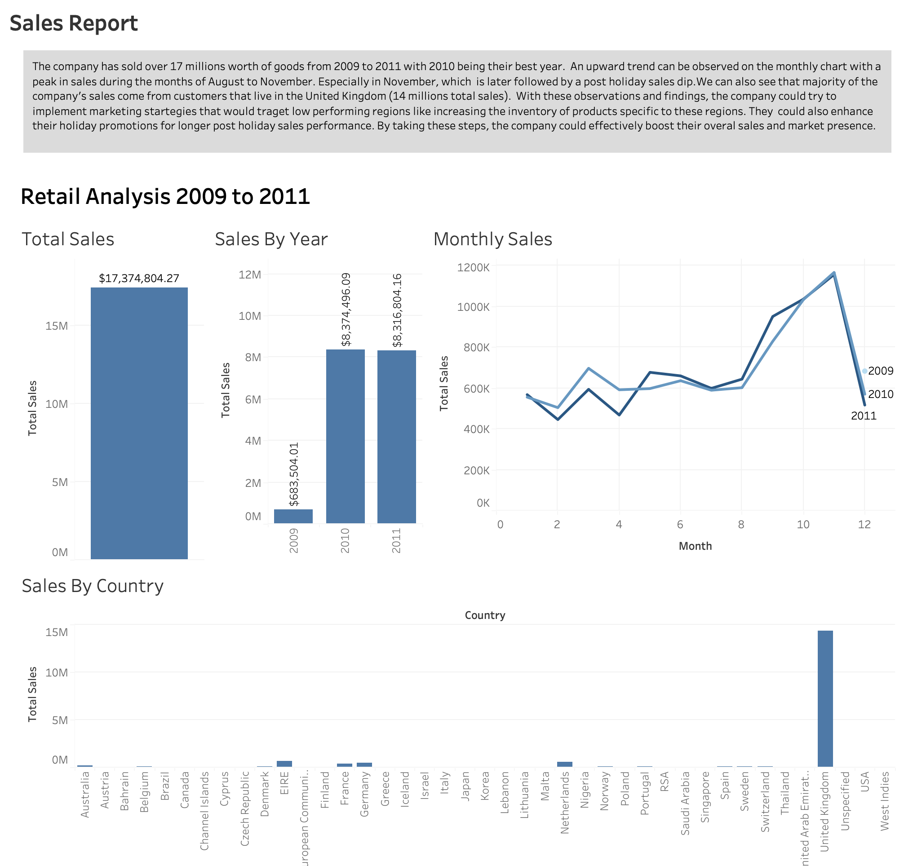

Project 1: Online Retail Sales Analysis
Project 2: Performance Metrics
The company specializes in sales, offering a variety of items to different types of clients, including wholesalers and individual sellers. Over the past three years (2018-2020), there has been a notable increase in sales, prompting an analysis of the company's performance. By comparing sales and profits across these years, the aim was to identify the most profitable areas in terms of categories, teams, and regions or states. The analysis revealed several key insights: Sales Growth: There was a significant increase in sales in 2020 compared to the previous years. This upward trend in order quantity indicates robust demand and effective sales strategies. Regional Performance: California emerged as the leading state in terms of sales volume. This is likely due to the high number of stores in this region, suggesting a strong market presence and customer base. Product Categories: The Phone category stands out as the most profitable item. This indicates a high demand and profitability potential, making it a strategic category for further investment and focus. These insights highlight the company's strengths in specific regions and product categories, providing a clear direction for future growth and profitability strategies. By leveraging the high-performing areas identified in this analysis, the company can optimize its operations and maximize returns.